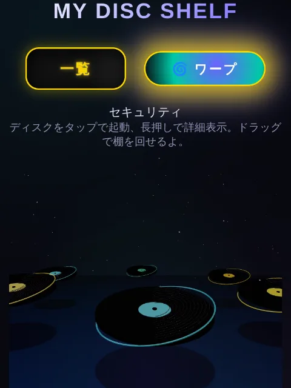
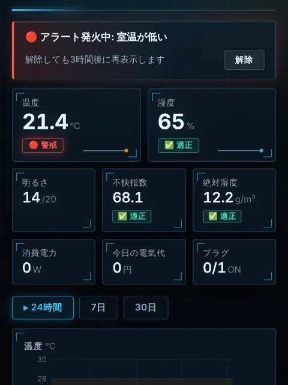
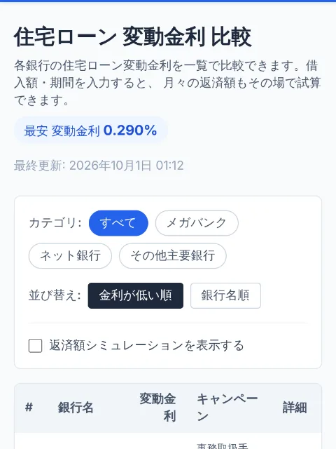
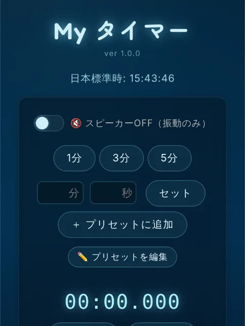

自作アプリをレコードに見立てて棚に並べる、3D のアプリポータル。

SwitchBot Hub 2 の温度・湿度・照度を15分ごとに記録して、グラフで見られる。

各銀行の変動金利を比べて、借入額と期間から返済額をシミュレーションできる。

日本標準時の表示とカウントダウンができる、シンプルなタイマー。
日用品のパッケージ写真とメーカーを家族で共有して、買い間違いを防ぐ。
← 38 本の一覧へ